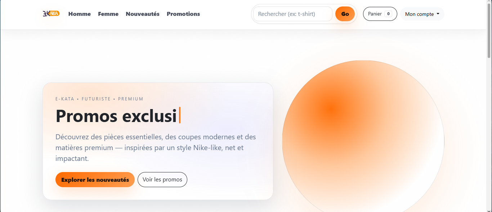

Architecture MVC
Une organisation claire pour que le projet reste propre, comprehensible et plus facile a faire évoluer.
Un projet e-commerce qui montre ma facon de penser : partir d'un besoin commercial, organiser l'expérience client et utiliser la technologie pour rendre l'achat plus simple.

E-Kata me permet de relier mes intérêts : le commerce, le digital, la présentation produit et la logique d'une boutique en ligne. Ce projet montre que je ne regarde pas seulement l'apparence d'un site, mais aussi le parcours client, l'organisation des produits et la gestion d'une activité.
Une organisation claire pour que le projet reste propre, comprehensible et plus facile a faire évoluer.
Un parcours pensé pour identifier les clients, securiser les accès et mieux structurer l'expérience.
Le coeur commercial du projet : presenter les produits, faciliter le choix, ajouter au panier et suivre la commande.
Un espace pour garder la main sur les produits, les contenus et les informations importantes de la boutique.
Chaque capture montre une partie du parcours : présentation, navigation, gestion et expérience d'achat.